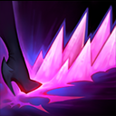

核心裝備
 巫妖之禍
巫妖之禍 死亡之帽
死亡之帽 虛空之杖
虛空之杖 無限寶珠
無限寶珠 女妖面紗
女妖面紗
以下為本站 7.2d 校正後的標準配置；實戰仍需依敵方陣容調整。


技能優先：Q > E > W
脫離戰鬥後進入魔魅之影，低生命時持續回復；五級後額外獲得偽裝。受到英雄或防禦塔傷害時會短暫延後進入。

向前釋放兩排尖刺造成魔法傷害，可在短時間內再次施放。冷卻短，是清野、疊傷與連招中的主要輸出。
詛咒指定英雄或野怪，下一次攻擊或技能會觸發緩速；等待足夠時間後改為魅惑，對英雄降低魔防，對野怪造成額外傷害。
鞭打目標並造成依最大生命計算的魔法傷害，之後提高跑速。進入魔魅之影後會強化，將伊芙琳拉向目標並造成範圍傷害。
短暫無法被指定，對前方造成魔法傷害後向後位移；對低生命英雄傷害大幅提高，可用於斬殺、躲招或越牆撤退。
2技掛印記 → 強化3技觸發魅惑 → 1技 → 普攻 → 4技斬殺
等待二技完整蓄滿後，以強化三技貼近並觸發魅惑，接一技與普攻，最後在低血斬殺線開大。
強化3技 → 1技 → 1技再施放 → 普攻 → 4技撤離
敵人缺乏位移或已殘血時不必等待魅惑，直接從偽裝中貼近爆發，避免二技警告讓目標提前撤退。
2技對野怪 → 1技觸發 → 3技 → 重擊 → 4技斬殺／撤退
二技對大型野怪有額外傷害，重擊與大絕可接近同時施放，並利用大絕後退避免被敵方集火。
五級前以穩定清野與避開強勢入侵為主，不要勉強進行缺乏控制的 Gank。二技對大型野怪能造成額外傷害，可用來加快關鍵營地與物件。
取得偽裝後從非傳統角度進場，先掛二技並等待完整魅惑，再用強化三技貼近。若敵人已經殘血或沒有逃生手段，也可提前觸發緩速直接爆發。
團戰前持續尋找沒有真視或隊友保護的側翼。大絕要保留到斬殺線或躲避關鍵傷害，完成輸出後利用後撤位移回到安全位置並重新進入魔魅之影。
對局名單是本站依英雄機制與目前配置整理的參考，不等同固定勝率。
打野先維持標準刷野與節奏裝，只有敵方陣容或我方前排需求明顯時才調整。
觸發：敵方前排多，物件團與正面團戰會長時間卡在高生命目標上。
用百分比生命灼燒或魔法穿透提高長時間處理高血量／高魔防前排的效率。
觸發：敵方能在你進場或搶物件前快速把你秒掉。
中婭沙漏兼顧魔攻與物防，主動凝滯能直接避開致命爆發。
骨甲降低接續傷害，適合換掉較貪輸出的副系符文。
觸發：進場或搶物件時經常被控制鏈直接中斷節奏。
堅毅提供韌性，受到硬控時也能短暫提高雙防。
觸發：敵方前排、鬥士或吸血核心能在物件團長時間回復。
黑魔禁書能由魔法傷害穩定施加重創，適合法師與軟輔處理大量治療。
觸發：我方陣容沒有可靠第一承傷點，團戰需要有人更早進場吸收注意力。
這隻英雄不適合為了「缺前排」硬改成主坦；維持自己的輸出／功能，讓巴龍路或輔助補前排更合理。
提醒：「缺前排」不代表所有打野都要改坦裝；刺客、法師與射手打野硬轉坦通常會失去英雄價值。
7.2a 打野正式版：技能名稱依 Riot Games 台灣《激鬥峽谷》伊芙琳英雄頁校正；出裝、符文、技能順序與偽裝抓單方向交叉參考 WildRiftFire 7.2a。Tier 與對局為本站綜合評級。｜v53：完成打野第二批正式版，完整套用李星固定母版，補齊起手裝、核心三件、五件成裝、技能加點、三組連招、對局與前中後期節奏。
本站於 2026-08-27 依 Patch 7.2d 重新檢查此配置。 Tier、出裝、符文與對局屬於 Wild Rift Guide 的整理與分析，不是 Riot Games 官方推薦；版本改動後會再依官方公告與實戰資料校正。